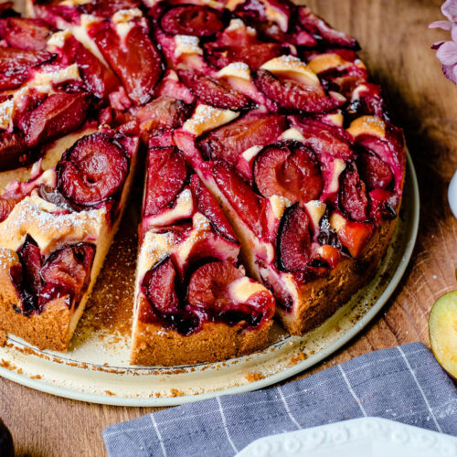

KOCHBUCH
Pflaumenkuchen
Zutaten
- 2 ½ kg Pflaume(n), ca.
- 500 g Zucker
- 250 g Butter, oder Margarine
- 4 große Ei(er)
- 500 g Mehl
- 1 Pck. Backpulver
- 1 Pck. Vanillezucker, oder etwas Vanillepaste
- 200 g Schmand
- 1 Pck. Sahnesteif, evtl.
- n. B. Rumaroma
- Fett, für die Form
Rezept
- Pflaumen säubern, aufschneiden und so entkernen, dass die Hälften zusammen bleiben.
- Zucker mit Butter und Vanillezucker schaumig schlagen. Eier nacheinander hinzugeben und kräftig mit aufschlagen. Mehl und Backpulver mischen und schrittweise hinzugeben. Schmand unterrühren und n.B. etwas Rumaroma zufügen.
- Teig auf einem gefetteten Blech (Fettpfanne) oder in 2 24/26er Springformen verteilen und die Pflaumen aufgeklappt schräg in den Teig stecken. Um zu verhindern, dass zu viel Saft in den Teig eindringt, kann man vor dem Einstecken der Pflaumen den Teig mit Sahnesteif bestreuen.
- Den Kuchen bei 180° Ober-/Unterhitze 60-90 min backen. Nadelprobe zwischen den Früchten machen. Nach dem Backen direkt mit etwas Zucker bestreuen und in der Form ganz auskühlen lassen.
- Der Kuchen schmeckt wunderbar mit etwas Sahne. Der Teig eignet sich auch gut für andere Obstsorten wie zum Beispiel Apfel oder Birne.
